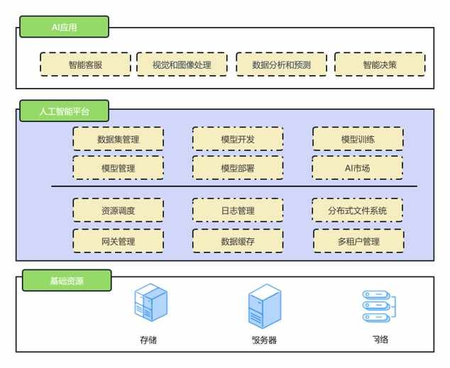
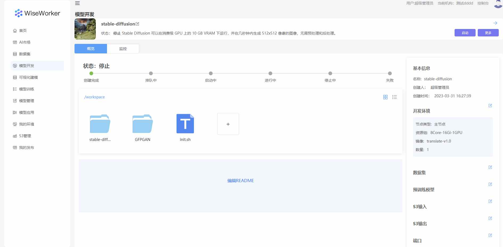
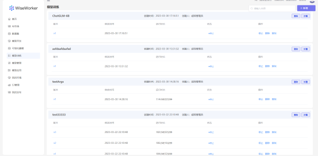

简介
WiseWorker是基于MLOps的理念打造的面向数据科学家和数据分析人员，为传统机器学习和深度学习提供了从数据采集、数据标注、数据治理、模型验证到模型开发以及模型部署的各个环节，一体化、全方位的技术软件与服务体系，帮助客户快速完成数据与模型迭代，高质量、高效率实现AI场景落地 
产品特点
简单易用
提供在线Jupyter和vscode的IDE，支持通过网页上传下载文件，支持数据集以目录的方式挂载到容器里，预制常用的开发环境镜像，帮助开发者快速构建试验环境。 
资源高效利用
支持任务按照优先级分配资源。 支持按照不同租户分配资源配额，防止单个用户使用过多的资源。 支持异构资源的分配。
版本化的管理
通过对数据集、模型、模型训练的版本化管理， 达到模型可复现、 可追溯， 保证AI资产可在组织各层面共享使用。 
全流程可监控
提供了模型、模型服务及模型生产过程等维度的健康状态监控能力， 以发现数据漂移和概念漂移， 快速帮助工程师识别问题和改进方向。